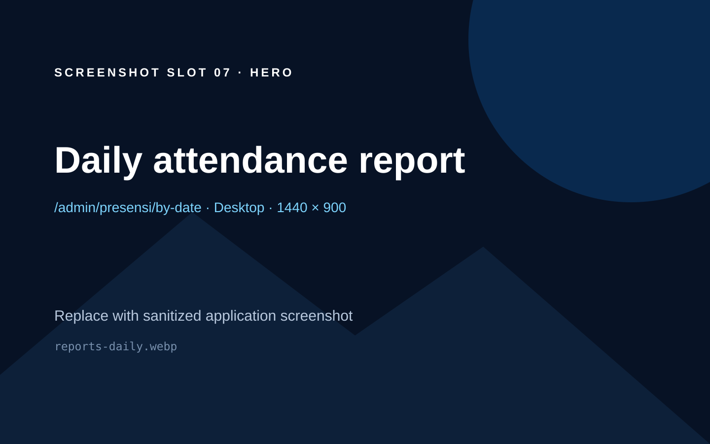
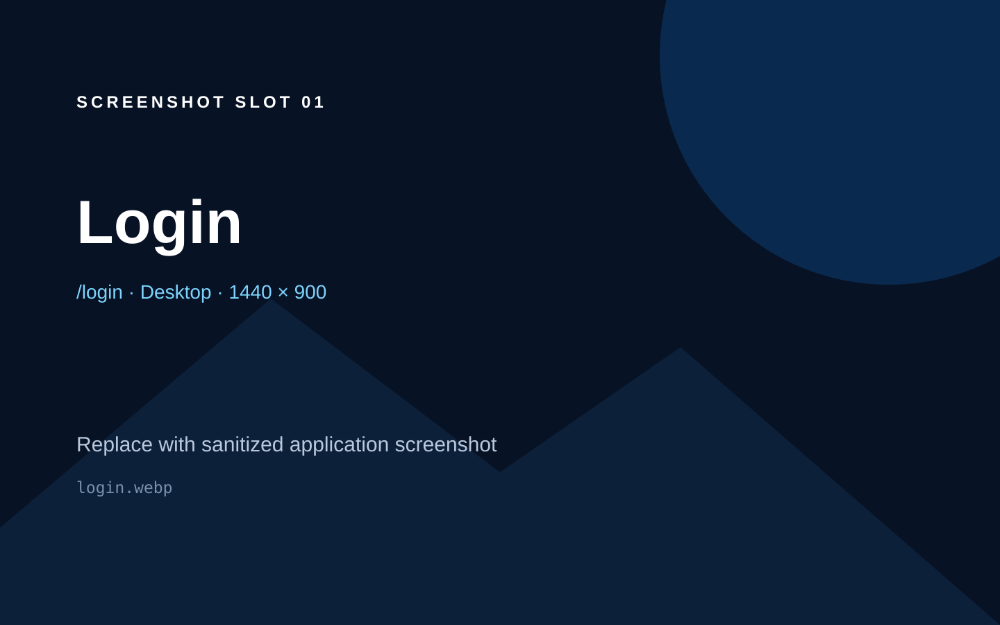
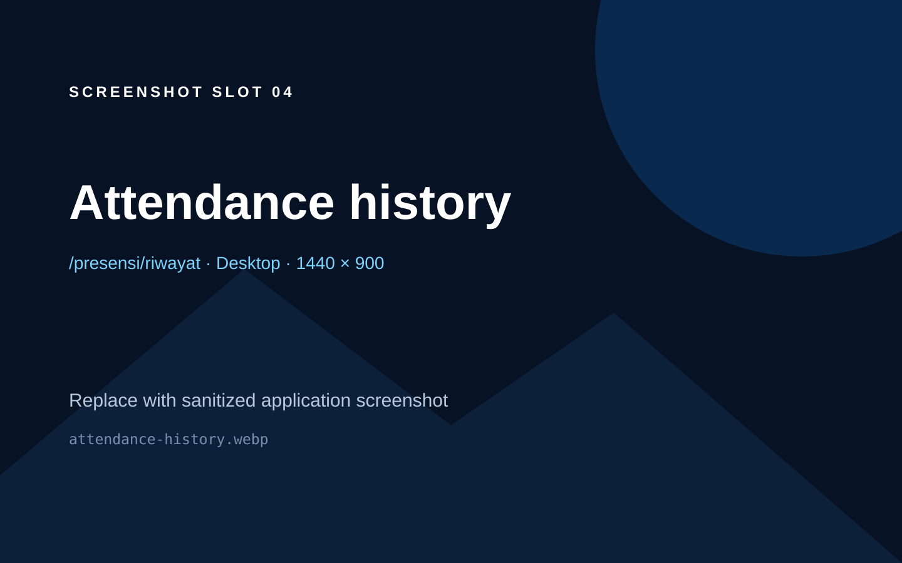
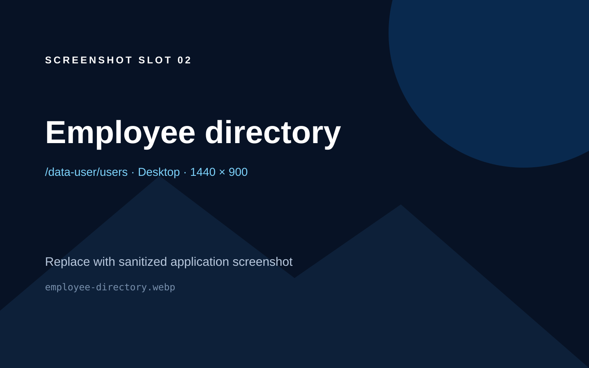
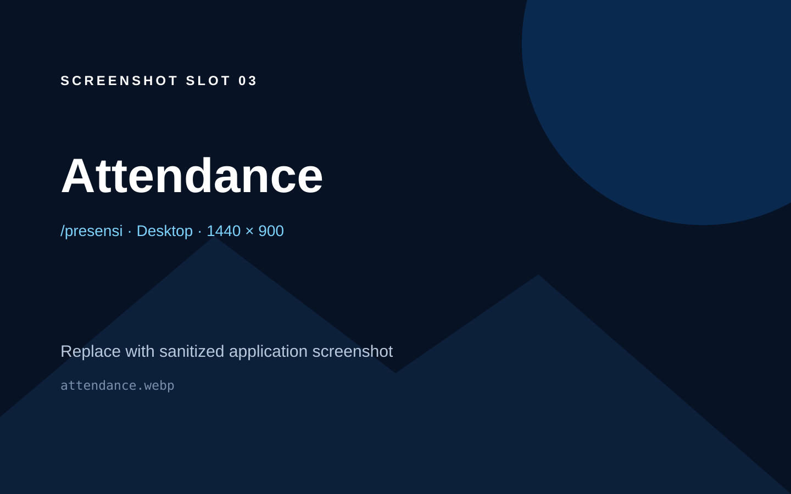
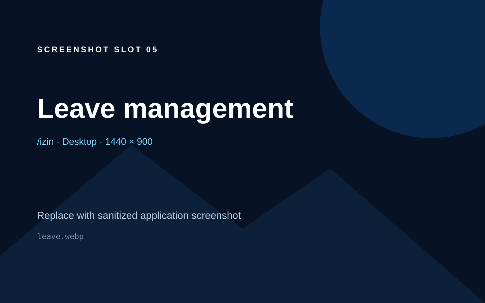
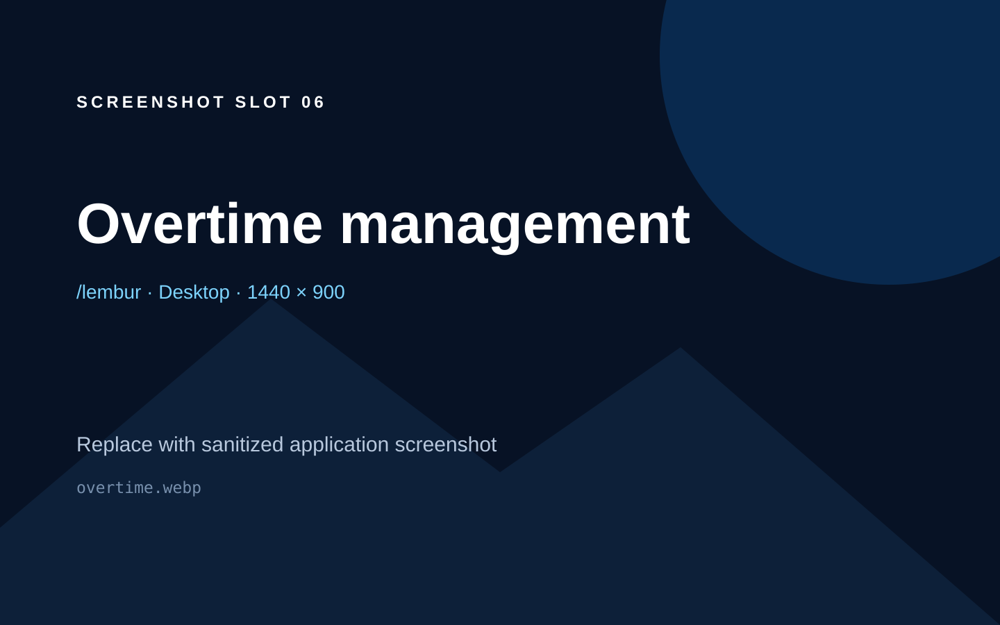
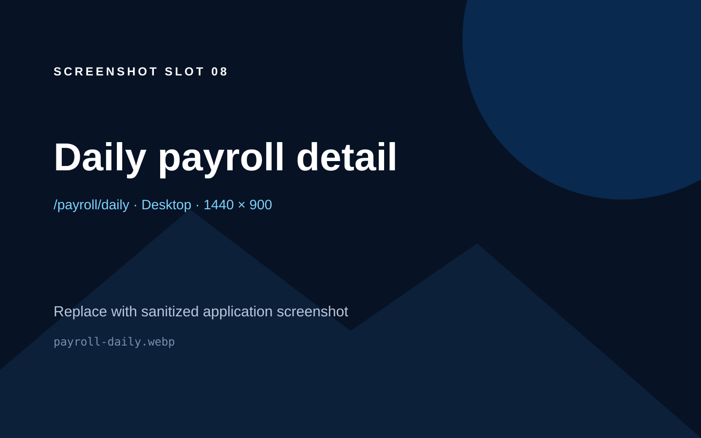

Full-stack employee operations
Employee Management System
A responsive Laravel and Vue application for employee records, GPS-assisted attendance, leave, overtime, operational reporting, and daily payroll calculations.
Static showcase only. No live backend demo is claimed; run Laravel and MySQL locally.

Project overview
Operational records in one auditable workflow
The application centralizes employee records, timekeeping, leave, overtime, reporting, and daily-pay calculations. Authorization combines three application roles with granular permissions at route and navigation boundaries.
Every preview slot below maps to a source-verified page. Until manually captured screenshots are supplied, abstract instruction cards remain visible and no application UI is fabricated.
Application preview
Eight source-verified screenshot slots
All future screenshots must use fictional demo data. Capture requirements are documented in SCREENSHOT_GUIDE.md.
01
Access and history
A focused guest entry point and an employee-facing operational timeline.

login.webp
attendance-history.webp02
People and attendance
Administrative employee records paired with the daily attendance workflow.

employee-directory.webp
attendance.webp03
Leave and overtime
Eligibility-aware leave requests and two-stage overtime recording.

leave.webp
overtime.webp04
Reporting and payroll
Operational recaps flow into exportable reports and daily-pay calculations.
reports-daily.webp
payroll-daily.webpScreenshot slots are intentionally abstract. Replace them only with manually captured, sanitized application images listed in the guide.
Architecture
A pragmatic Laravel modular monolith
Inertia connects Laravel routes and controllers to Vue pages. Reusable payroll and attendance calculations live in services, shared business rules live in support classes, and Eloquent provides data access.
Laravel 13Vue 3.5InertiaTailwind CSSMySQLSpatie PermissionPHPUnit
PresentationVue pages · layouts · components · composables
↓
HTTP boundaryRoutes · controllers · requests · middleware
↓
Application rulesServices · support classes · permissions
↓
Data and outputEloquent · MySQL · PDF · Excel · print views
Run locally
Seeded for portfolio review
GitHub Pages can host this static showcase only. Follow the repository README to run the actual Laravel application.
composer install
npm ci
cp .env.example .env
php artisan key:generate
php artisan migrate:fresh --seed
npm run build
php artisan serve